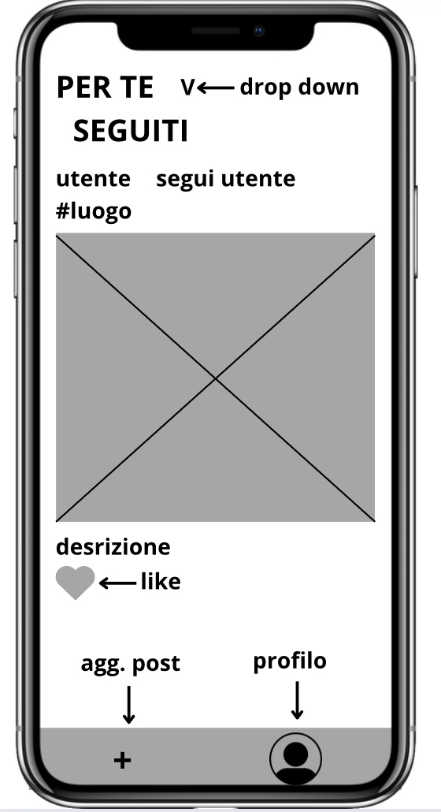
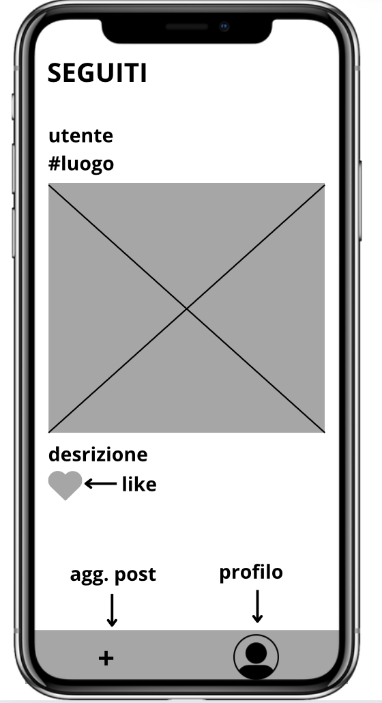

Documentazione
Progetto Moligram
L'obiettivo del progetto Moligram è creare uno spazio di comunicazione semplice e immediato, dove gli utenti della scuola Ettore Molinari (da qui il nome Moligram), possano condividere immagini in tempo reale e in modo rapido e sicuro. La piattaforma punta a offrire un'esperienza intuitiva, divertente e accessibile a tutti.
Tema specifico del gruppo: Moligram - Classe: 5B INF.
- Classe/Anno: 5B INF - 24/25
- Autori: Alessandro di Cugno, Federico Saggioro, Chiara Pinto, Jerome Bolinas
- Creato: 8 Aprile 2025
- Ultima modifica: 11 Aprile 2025
Architettura informazione
Moligram è un social network mobile-first pensato per studenti, interamente focalizzato sulla condivisione pubblica di fotografie. Il sistema prevede l’autenticazione degli utenti tramite un processo di registrazione e login, permettendo così l’accesso a funzionalità personali e riservate. La piattaforma si fonda su una bacheca pubblica unica, dove tutti i post vengono mostrati in ordine cronologico, accessibile sia agli utenti registrati che a chi naviga da non autenticato. Ogni post consiste in una fotografia obbligatoria, una descrizione testuale opzionale e, se presente, un tag geografico. In questa sezione è possibile mettere “like” ai contenuti e seguire gli autori dei post, arricchendo così l’interazione sociale tra gli utenti. Una volta autenticati, gli utenti accedono a una dashboard privata che consente una gestione completa del proprio profilo. All’interno della dashboard si trovano due aree principali: l’elenco dei propri post e la lista degli utenti seguiti. Nell’area dedicata ai post personali, l’utente ha la possibilità di aggiungere nuovi contenuti tramite una modale e di eliminare quelli esistenti. Nella sezione relativa agli utenti seguiti, è possibile visualizzare chi si sta seguendo e, se necessario, interrompere il follow. Oltre alla dashboard, l’utente autenticato può consultare un feed personalizzato che mostra esclusivamente i post pubblicati dagli utenti che segue, mantenendo l’ordine cronologico come criterio di visualizzazione. Ogni profilo utente, proprio o altrui, presenta l’elenco dei post pubblicati, il numero di follower e di persone seguite, creando così una dimensione relazionale chiara e accessibile. Tutti i profili sono pubblici, ma la possibilità di pubblicare o interagire direttamente con i contenuti è riservata agli utenti registrati. L’interfaccia utente è progettata secondo il principio del mobile first, con un’attenzione particolare all’usabilità da smartphone, alla chiarezza dei contenuti e alla semplicità della navigazione. La gestione dell’utente è centrale nel progetto, garantendo un accesso sicuro, una fruizione fluida dei contenuti e una separazione netta tra funzionalità pubbliche e private.
UML
Questa sezione include i diagrammi UML per i casi d'uso, gli oggetti, gli stati e le sequenze.
Diagramma di Casi d'uso
Il diagramma rappresenta la navigazione utente attraverso le diverse sezioni del sito.


Diagrammi di oggetti
Rappresentazione delle relazioni tra i dati strutturati e gli oggetti coinvolti.

Diagrammi di Stato
Diagramma che mostra lo stato e le transizioni dei punti di interesse.

Diagrammi di Sequenza
Diagramma che descrive il flusso delle operazioni nella SPA.

Contenuti del progetto
Social network degli studenti per condivisione solo foto. Prevede la registrazione utente e il login. La condivisione foto è sempre pubblica. Per ogni post è prevista foto e descrizione. Tag geografico facoltativo. I post sono pubblici in una unica bacheca. E' prevista una dashboard privata vedi sotto.
Funzioni previste obbligatorie:
- pagina pubblica con post in ordine cronologico. Ogni post ha una foto, descrizione opzionale (ed eventuale tag se implementato). E' possibile mettere like e seguire autore del post.
- pagina account seguiti: post in ordine cronologico (solo utenti che si seguono).
- dashboard privata:
a. elenco propri post: possibile aggiungere (con modale) ed eliminare propri post;
b. elenco utenti seguiti: possibile non seguire più utente;
facoltative:
- pagina best: migliori foto del mese e in assoluto
- tag localizzazione (con mappa).
Infrastruttura Tecnica
Architettura Generale
Architettura a 3 livelli: Frontend: interfaccia utente (React / Vue / Angular) Backend: API REST/GraphQL per gestire utenti, messaggi, immagini Database: storage dati utenti e riferimenti ai file media Storage: sistema file (es. S3) per immagini Realtime: WebSocket o libreria tipo Socket.io per aggiornamento in tempo reale üîß Esempio di stack: Frontend: React + TailwindCSS Backend: Node.js + Express Realtime: Socket.io Database: PostgreSQL o MongoDB Storage immagini: Amazon S3 (o Firebase Storage) Hosting: AWS / Vercel / Heroku (dipende da budget e requisiti)
Ambineti Previsti
Dev: per sviluppo e testing locale Test / QA: per validazione interna Produzione: per rilascio pubblico
Sicurezza
HTTPS obbligatorio (certificato SSL) Crittografia JWT per autenticazione Rate-limiting su API per evitare abusi Validazione lato server di immagini (es. dimensioni, formato) Policy di accesso ai bucket di storage (es. solo immagini pubblicate)
Cloud / Hosting
Frontend: Vercel o Netlify (per React) Backend: AWS (EC2 / Lambda), oppure Railway, Heroku DB: RDS (PostgreSQL) o MongoDB Atlas Storage immagini: Amazon S3 o Cloudinary Realtime: Socket.io con Redis (se si scala orizzontalmente)
CI/CD e Deployment
CI/CD con GitHub Actions o GitLab CI Build automatica e deploy su ambienti Dev/Test/Prod Rollback facile (deploy versionato)
Scalabilità e Monitoraggio
Bilanciamento carico per backend (Load balancer o servizi gestiti) CDN per immagini (es. CloudFront o Cloudflare) Logging centralizzato (es. Loggly, Datadog, ELK) Monitoraggio risorse e uptime (es. UptimeRobot, Grafana, Prometheus)
Standard e Conformità
Conformità al GDPR per la gestione dei dati personali Cookie banner e gestione consensi (se tracking presente)
Manutenzione e Supporto
Backup giornalieri del DB Storage S3 con versioning e ciclo di vita Alert automatici per errori/timeout
Wireframes
Wireframes per rappresentare il layout grafico dell'applicazione.
 Il progetto
Contiene le credenziali di accesso e il link al progetto finale.